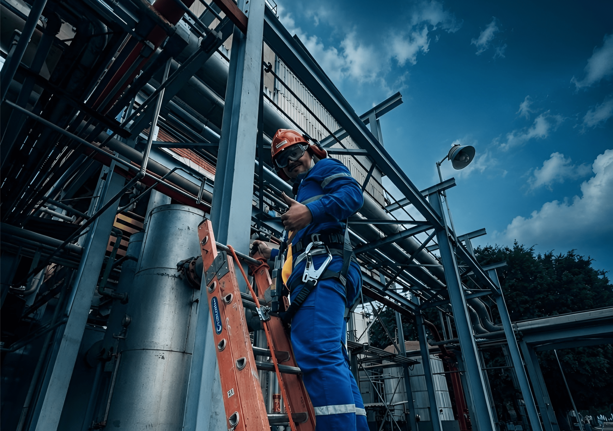

INSPEÇÕES E AVALIAÇÕES
Garantir a segurança e a conformidade dos equipamentos é essencial para a continuidade das operações e a proteção dos trabalhadores. A PRIME Treinamentos realiza inspeções e avaliações técnicas em equipamentos, máquinas e sistemas, seguindo rigorosamente as normas regulamentadoras e os requisitos legais vigentes.
Nossa equipe é composta por profissionais qualificados, que elaboram laudos, relatórios técnicos e recomendações precisas para identificar riscos, prevenir acidentes e assegurar que sua empresa esteja em conformidade com a legislação. Mais do que atender às exigências legais, oferecemos soluções que aumentam a confiabilidade, a produtividade e a segurança do ambiente de trabalho.